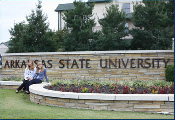
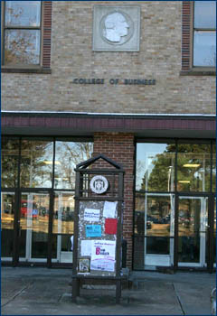
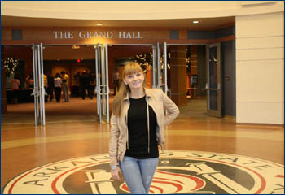
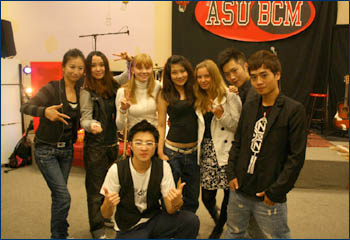
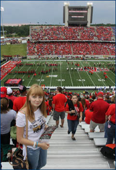
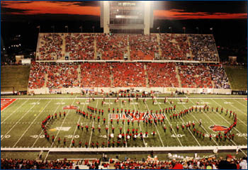

|
Будучи студенткой 3-го курса факультета международных отношений, мне представилась уникальная возможность полгода поучиться в Университете Арканзас (Arkansas State University) в г. Джонсборо, США.
Джонсборо – маленький университетский городок в штате Арканзас с населением около 70 000 человек. Уютный, с парками и озерами, тихий и спокойный. Жители города преимущественно студенты. Сам же университет огромный. В первые дни сложно было не заблудиться, но, спасибо приветливым американцам, которые всегда были готовы показать дорогу. На территории кампуса помимо учебных корпусов находятся многоэтажная библиотека, которая открыта практически круглосуточно, концертный зал, спортивный комплекс, музей и даже университетский зоопарк с конюшнями.
Договор о сотрудничестве между ВГУ и Arkansas State University был подписан относительно недавно, до меня туда еще никто не ездил учиться, поэтому ехала я с опаской и чувством неизвестности. И действительно, попала в совершенно другой мир. Как только выходишь из аэропорта, думаешь «Вот она, свобода!». Но вместе с ней приходит и ответственность. С первых же дней ты чувствуешь, насколько развит индивидуализм в этой стране. Каждый отвечает сам за себя. И в этих условиях ты взрослеешь и становишься более самостоятельным.
Американские студенты очень серьезно относятся к образованию. Студенты имеют право выбирать предметы и самостоятельно выстраивать свое расписание. Конечно, к любой специальности привязаны определенные курсы, которые надо прослушать, но всегда есть возможность изучать, например, языки, искусство или даже музыку. Я постаралась взять те предметы, которые в этот момент изучались в ВГУ, чтобы сдавать меньше экзаменов после приезда домой. Мне очень повезло с преподавателями, которые всегда готовы были ответить на любые вопросы, помочь и выслушать. Все лекции сопровождались видео и слайдами, что облегчало изучение, домашних заданий было много. За такой короткий период я написала очень много эссе, проводила социальные опросы, делала презентации и многое другое. Занятия, тесты, экзамены, рефераты, работа над проектом.…Словом, расслабляться было некогда.
Помимо всего этого была и активная студенческая жизнь. Иностранные студенты ASU образуют я бы сказала целое сообщество, где все друг друга знают, все открыты для общения и готовы поддержать. В университете много студентов из разных стран: Германия, Австрия, Польша, Китай, Индия и т.д. Русских же очень мало. Тематические вечера, танцевальные клубы, праздники и различные другие мероприятия приводят к тому, что ты постоянно находишься в обществе абсолютно разных людей, культур, но, несмотря на это, чувствуешь себя «своим» и заводишь много друзей.
Также для американцев очень важен спорт. Футбольный матч – это целое событие для жителей Джонсборо. Собирается весь город поболеть за любимую команду. На таком мероприятии всегда можно встретить не только знакомых студентов, но и преподавателей, солидных профессоров, которые пришли отдохнуть вместе со своими семьями. Матч – это не просто игра, это целое шоу, которое смотреть – одно удовольствие. Ощущения непередаваемые!
Что касается самих американцев, то они действительно очень приятные и отзывчивые люди: всегда улыбаются и здороваются, даже если видят тебя впервые. Они открыты для общения, с охотой знакомятся с тобой и готовы помочь. Находясь в этой атмосфере дружелюбия, ты и сам становишься таким же, более открытым и приветливым.
В заключении я бы хотела сказать, что нисколько не жалею о поездке. Проживание в другой стране, другой среде, среди множества культур и абсолютно разных людей многому меня научило. Это был бесценный опыт. Каждому, кому выпадет такая возможность, я желаю хвататься за неё и не упускать этот шанс!
Юлия Помельцова
студентка 3 курса
Факультета международных отношений
|